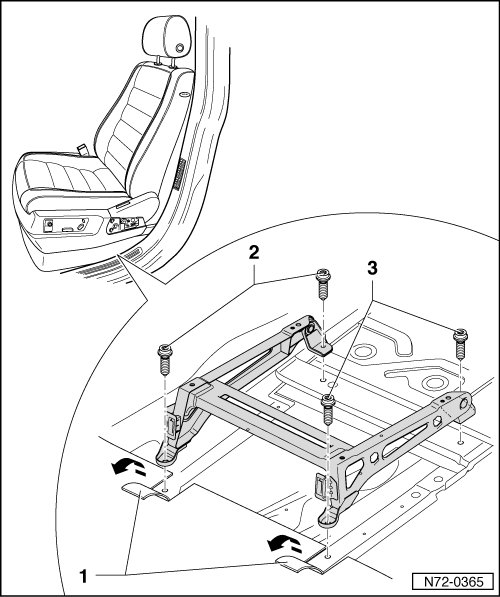

Seat Base
Front Seats
Seat Base
• Removal and installation is described for the left-hand side of the vehicle. Removal and installation for the right-hand side is performed in the same manner.
Removing
- Remove belt anchor --> [ Belt Anchor ] Belt Anchor.
- Remove front seat:
• Remove 12-way seat --> [ Front Seat ].Front Seat
- Fold back 2 flaps in floor covering - 1 -.
- Remove two bolts - 2 - and - 3 - (45 Nm) respectively.
• The bolts are microencapsulated and must therefore be replaced after every removal.
• Before installing the new bolts, the threads of the corresponding nuts must be cleaned.
- Lift seat base out of vehicle.

Installing
- Perform the steps used for removal in reverse order.